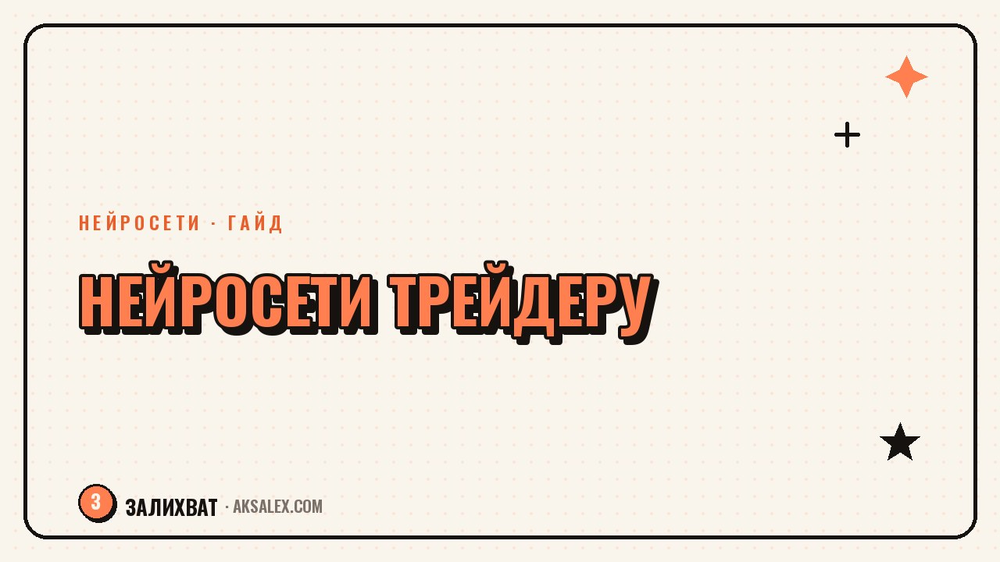

Нейросети для трейдера и инвестора: разбор новостей и отчётов

Если ты торгуешь на бирже или просто ведёшь личный портфель, то знаешь, сколько времени уходит на рутину: прочитать новость, понять, касается ли она твоих бумаг, свериться с отчётом компании, вспомнить, почему вообще зашёл в эту позицию. Нейросети не торгуют за тебя и не дают сигналов 'покупай' или 'продавай' - это не их работа и доверять им в этом не стоит. Но они отлично разбирают текст, таблицы и твои собственные записи, и именно здесь экономят часы в неделю.
Что нейросеть умеет в работе с рынком, а что нет
Важно сразу развести два слоя. Первый - анализ текста: новости, пресс-релизы, отчёты, комментарии аналитиков. Тут нейросеть сильна: быстро вытаскивает суть из длинного документа, переводит иностранные источники, сравнивает формулировки квартал к кварталу. Второй слой - прогноз цены и решение о сделке. Здесь нейросеть не заменяет расчёт и риск-менеджмент: она не видит твой капитал, горизонт и терпимость к просадке, а генеративные модели вообще не умеют предсказывать будущее, они угадывают вероятное продолжение текста.
Отсюда правило: отдавай нейросети чтение и структурирование, оставляй себе решение. Если модель написала 'акция скорее всего вырастет' - это не аналитика, а вероятная фраза из тысяч похожих текстов в интернете. Полезно спрашивать иначе: не 'что будет с ценой', а 'какие риски и аргументы называют аналитики в этом отчёте' - тогда ответ окажется проверяемым.
Три задачи, где нейросеть экономит время
- Краткое изложение отчёта эмитента на 40-60 страниц - выжимка на один экран
- Перевод зарубежной новости, которая может задеть твои позиции
- Разбор собственного торгового дневника - поиск повторяющихся ошибок
Как читать новости и отчёты с нейросетью: пошагово
Частый сценарий - утренний разбор новостей перед открытием рынка. Вместо того чтобы читать десять заголовков вручную, загружаешь ленту в чат-модель и просишь выделить то, что касается конкретно твоих бумаг, с коротким объяснением почему это важно. Это не отменяет чтения первоисточника перед сделкой, но сокращает время на фильтрацию мусора.
Разбор отчёта компании по шагам
- Загружаешь PDF или текст отчёта (МСФО, РСБУ, пресс-релиз) в модель с длинным контекстом
- Просишь выделить выручку, прибыль и долг в сравнении с прошлым периодом
- Просишь процитировать разделы про риски и прогнозы менеджмента - своими словами
- Сверяешь ключевые цифры с первоисточником вручную
Нейросеть - быстрый читатель, а не финансовый советник. Она ускоряет этап 'прочитать и понять', но решение 'купить или продать' остаётся за человеком, который отвечает своими деньгами.
Какой инструмент выбрать: сравнение подходов
Для трейдера важны три вещи: длина контекста, качество работы с таблицами и конфиденциальность, если загружаешь внутренние документы компании. Вот сравнение по типам сервисов.
| Тип инструмента | Для чего подходит | Что учесть |
|---|---|---|
| Языковая модель с загрузкой файлов | Разбор отчётов, новостей, дневника | Проверяй цифры вручную |
| Агрегатор новостей биржи | Быстрый обзор рынка | Часто встроено ИИ-резюме |
| Переводчик с ИИ | Зарубежные отчёты и новости | Термины переводи с проверкой |
| Диктофон с транскрибацией | Зафиксировать мысль по сделке | Для дневника, не для цифр |
Частые ошибки при использовании нейросетей на бирже
Самая опасная ошибка - просить у модели прямой прогноз цены и действовать по нему. Модель не предсказывает будущее, а комбинирует текст. Вторая ошибка - загружать в публичный чат документы с реальными счетами или внутренней отчётностью: это риск утечки, многие сервисы используют переданные данные для обучения, если это не отключено в настройках. Третья ошибка - перестать проверять цифры после того, как модель один раз не ошиблась: она может написать правильную на первый взгляд цифру, которой не было в документе.
- Не вставляй номера счетов, суммы на балансе и личные данные в публичные чаты
- Переспрашивай модель 'процитируй точное место в документе', а не верь выжимке на слово
- Используй нейросеть для скорости чтения, а не для замены собственного расчёта риска
Когда нейросеть вообще не нужна
Если ты торгуешь внутри дня на коротких таймфреймах, скорость решения важнее глубины анализа - там нейросеть скорее мешает, отвлекая на чтение, пока рынок уже ушёл. Не стоит перекладывать на модель управление риском: размер позиции, стоп-лосс и диверсификацию считай сам или через проверенный калькулятор, а не спрашивай у чат-бота 'сколько мне вложить'. Модель не знает твою финансовую ситуацию целиком и не несёт ответственности за ответ. Хорошая граница применения такая: нейросеть - для подготовки и рефлексии, человек - для решения и действия.
Частые вопросы
Может ли нейросеть предсказать, вырастет акция или упадёт?
Нет, языковые модели не имеют доступа к будущим событиям и не анализируют рынок как торговый алгоритм. Любой 'прогноз' от чат-бота - вероятная фраза на основе текстов, а не расчёт. Относись к нему как к мнению случайного человека из интернета, не больше.
Безопасно ли загружать отчёт компании в нейросеть для разбора?
Если отчёт публичный, загружать его безопасно. Если это внутренний документ с конфиденциальными данными - проверь политику сервиса насчёт использования данных и убери из текста личную информацию и суммы счетов.
Какая нейросеть лучше работает с таблицами в финансовых отчётах?
Лучше справляются модели с большим контекстным окном, которые принимают PDF и сохраняют структуру таблиц. Но даже у лучших моделей случаются ошибки распознавания цифр в сканах, поэтому ключевые числа сверяй с первоисточником.
Стоит ли вести торговый дневник с помощью нейросети?
Да: записываешь сделки своими словами, а раз в месяц просишь найти повторяющиеся паттерны ошибок. Это помогает увидеть собственное поведение со стороны, а не заменяет анализ рынка.
Чем нейросеть отличается от торгового робота или алгоритма?
Торговый робот работает по заданным правилам и исполняет сделки автоматически по биржевым данным. Языковая нейросеть читает и пишет текст, у неё нет доступа к торговому счёту и она не принимает решения о сделке сама.
Раз тема оказалась полезной, вот что почитать следующим. LinkedIn живёт по своим правилам: меньше эмоций, больше пользы. Как начать блог там и где тут помогут нейросети.
Читать статью →а не вручную